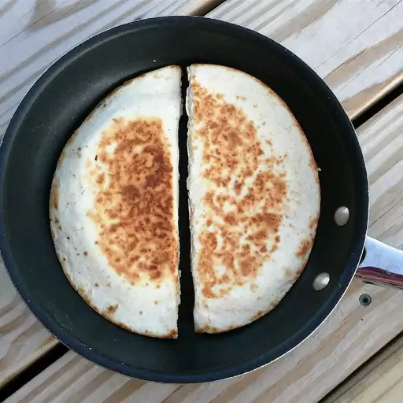

Quesadillas

Description
A quesadilla is a Mexican dish consisting of a tortilla that is filled
primarily with cheese, and sometimes meats, spices, and other fillings,
and then cooked on a griddle or stove. Traditionally, a corn tortilla is
used, but it can also be made with a flour tortilla.
Ingredients
- 10 corn tortillas
- 2 Cups of shredded cheese
- 1 oz of black olives
- 2 Avocados
- 2 tablespoons of hot pepper sauce
Steps
- Heat a large frying pan or griddle over a medium heat.
-
Place one tortilla flat on the frying pan. Cook for 1 minute, then flip
the tortilla over.
-
Sprinkle a little more than 1/4 cup cheese on top of tortilla, followed
by some olives, avocado, and hot pepper sauce.
-
Place another tortilla on top to make a sandwich; cover with a lid. Cook
for 1 minute, then flip the quesadilla.
-
Cook until cheese has melted on the inside; transfer quesadilla to a
plate. Repeat with remaining ingredients.
- Cut the quesadillas into triangles and serve.
Home